컴파일 <3> CMake
1. CMake 기본
- CMakeLists.txt: CMake는 이 파일을 처리해 네이티브 빌드 시스템을 생성, 빌드 도구 사용해 SW를 실제로 컴파일
- 사용자가 작성할 파일
- Makefile: 생성된 Makefile
- CMakeCache.txt: 텍스트 기반 설정 파일. 해당 빌드 머신을 위해 자동으로 생성된 기본 설정이 저장되어 있다.
-
CMakeFiles/: 자동으로 생성된 프레임워크 파일들이 있다. 생성된 파일들은 메인 makefile에서 사용된다.
- 모든 명령은 스페이스로 argument 구분
- command (
arg1arg2… )
- command (
- 스페이스바가 포함된 argument가 한 개 arg라면 " " 사용
- command (
"Helloˇworld")
- command (
- command에 따라 어떤 argument가 쓰일지 결정
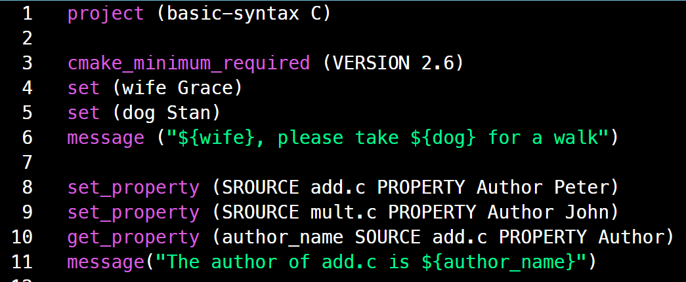
project: 빌드 이름, 사용할 언어
project(basic-syntax C)
- 빌드 시스템을 식별할 수 있는 고유한 이름
- 여기서 정의된 이름은 이클립스와 같은 프로젝트 이름이 필요한 네이티브 빌드 도구에서 그대로 사용
- basic-syntax C: 사용할 프로그래밍 언어 지정
cmake_minimum_required: CMake 버전
cmake_minimum_required(VERSION 버전)
set: 변수 정의
- 변수 정의: set(변수 값)
- 변수 사용: ${변수}
set_property: 속성 값 설정
set_property (SROURCE 소스 PROPERTY 속성 값)
- 소스 파일에 속성 값을 저장
- 설정된 속성은 파일 내용에 영향 X
- 속성 값은 다른 명령에서 접근 가능
- set_property (SROURCE add.c PROPERTY Author Peter)
- add.c 소스 파일의 Author 속성에 Peter 값 할당
get_property: 속성 값 얻기
get_property (할당할 변수 SROURCE 소스 PROPERTY 속성)
- 소스 파일에 속성 값을 가져와 할당할 변수에 저장
- get_property (author_name SROURCE add.c PROPERTY Author)
- add.c 소스 파일의 Author 속성의 값의 내용을 author_name 에 할당
add_executable: 실행 프로그램 생성
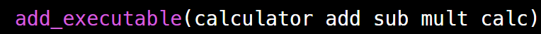
add_executable (실행파일 이름 src1 src2 src3 …) ".c", ".cpp"는 붙여도 되고 안해도 됨
- 소스 파일들을 빌드해 실행파일 생성
- add_executable (calculator add sub mult calc)
- add.c sub.c mult.c calc.c 소스 파일을 이용해
- 실행파일 "calculator" 생성
example 1
- 현재 main.c print.h 소스 코드가 있고 간단하게 빌드하는 CMakeLists.txt만들어 본다.
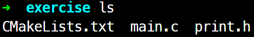
cmake_minimum_required(VERSION 2.6)
set(author "Dong-Hyeon Yang") # author 변수에 "Dong-Hyeon Yang" 문자열 넣어봄
message(${author}) # author 변수를 message 함수를 통해 변수 내용을 출력해봄
add_executable(main main) # 실행 파일 명: main
# 소스 파일 명: main.c (.c 생략 가능)
$ cmake PATH
- PATH에 CMakeLists.txt 파일의 위치 경로 지정
- 지정한 위치의 CMakeLists.txt를 읽어 현재 내 위치에 빌드
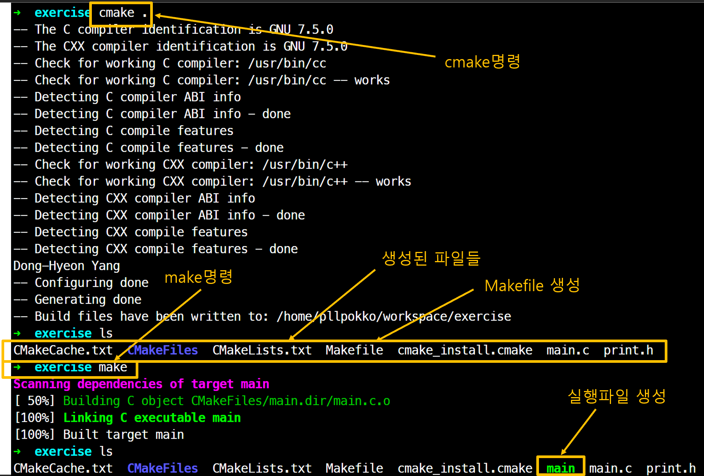
add_library: 라이브러리 생성
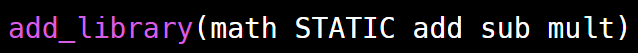
add_library (라이브러리 이름 [STATIC | SHARED | MODULE] src1 src2 src3 …) ".c", ".cpp"는 붙여도 되고 안해도 됨
- 소스 파일들을 빌드해 라이브러리 생성
- add_library (math STATIC add sub mul)
- add.c sub.c mult.c 소스 파일을 이용해
- STATIC 라이브러리(정적 라이브러리)
- 라이브러리 "math" 생성 => 결과물: libclsched.a
add_libary(clsched STATIC clsched.c clsched_interceptor.c)
- libclsched.a 생성
add_libary(clsched SHARED clsched.c clsched_interceptor.c)
- libclsched.so 생성
2. sub디렉터리, -L, -I, -l 플래그
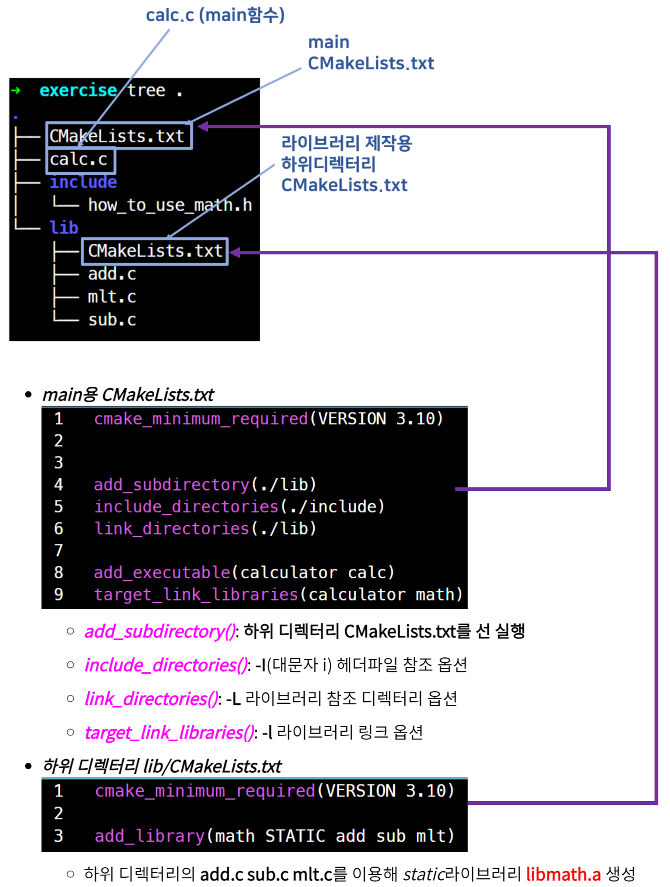
add_subdirectory: 하위 디렉터리 CMakeLists.txt
add_subdirectory (sub dir1 sub dir2)
- 하위 디렉터리의 CMakeLists.txt를 선행 빌드
include_directories: -I 참조 include 디렉터리 지정
- 참조할 include 디렉터리 지정
-I옵션$ gcc -I./include foo.c -o bar # gcc -I 옵션
include_directories (include dir1 include dir2)
link_directories: -L 참조 라이브러리 디렉터리 지정
- 링크할 라이브러리가 있는 디렉터리 지정
-L옵션$ gcc -L./lib main.c -lclsched # gcc -L 옵션
link_directories (link dir 1 link dir 2)
target_link_libraries: -l 라이브러리 링크 걸기
- 링크할 라이브러리 지정
-l옵션$ gcc main.c -lclsched # gcc -l 옵션
target_link_libraries (library 1 library 2)
set
- CMAKE_BUILD_TYPE: 빌드 형상
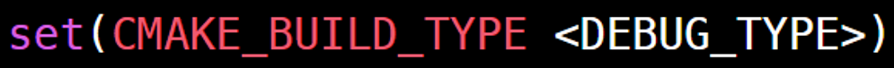- Debug: 디버깅 목적 빌드
-g플래그 - Release: 배포 목적 빌드
- RelWithDebInfo: 배포 목적 빌드 + 디버깅 정보 포함
- MinSizeRel: 최소 크기로 최적화한 배포 목적 빌드
- Debug: 디버깅 목적 빌드
set_property
- COMPILE_DEFINITIONS: 심볼 정의
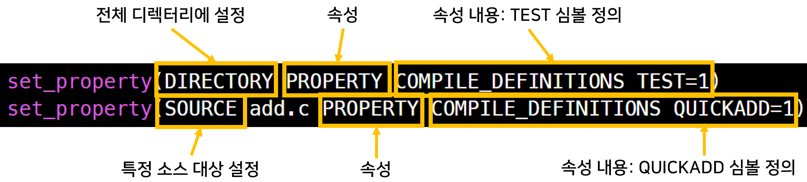 - set_property(DIRECTORY PROPERTY COMPILE_DEFINITIONS TEST=1)
- 현재 DIRECTORY의 모든 C파일을 컴파일할 때 TEST 심볼 정의
- set_property(SOURCE add.c PROPERTY COMPILE_DEFINITIONS QUICKADD=1)
- 특정 SOURCE인 add.c에 QUICKADD 심볼 정의
if/elseif/endif
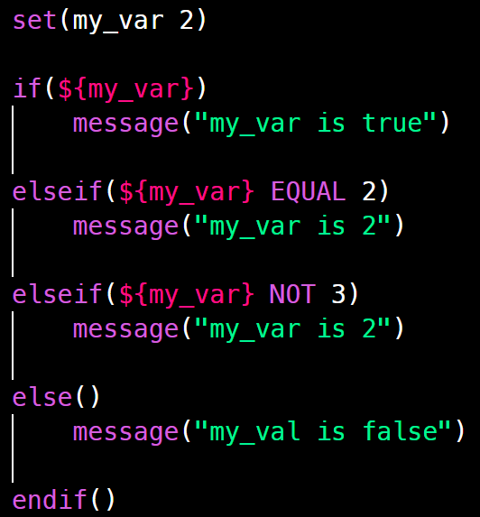
- if() elseif() else() endif()
- EQUAL, NOT, AND, OR
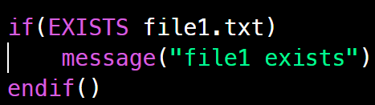
- EXISTS: 파일 존재 유무
- 주의: 파일 확인하는 시점은 빌드가 실행되는 시점이 아닌 생성되는 시점
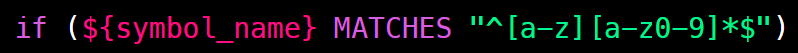
- MATCHES: 정규식 사용
크로스플랫폼 지원
- Cross Platform 을 지원하려면 CMake의 빌드 기술은 플랫폼 중립적이어야한다.
- 빌드 프로세스에서 사용되는 도구와 파일 위치를 상세히 기술하지 않는다.
- CMake에 의해 찾게한다.
ls프로그램, stdio.h 헤더파일, math라이브러리를 찾는 예제이다.
find_program(LS_PATH ls) # ls 프로그램을 찾아 LS_PATH 변수에 담는다.
message("ls path: ${LS_PATH}")
find_file(STDIO_H_PATH stdio.h) # stdio.h 파일을 찾아서 STDIO_H_PATH 변수에 담는다.
message("stdio path: ${STDIO_H_PATH}")
find_library(LIB_MATH_PATH m /usr/local/lib /usr/lib64) # lib'm'.so 를 찾기 위해 /usr/local/lib /usr/lib64를 찾아봐라
message("math lib path: ${LIB_MATH_PATH}")
ls path: /bin/ls
stdio path: /usr/include/stdio.h
math lib path: /usr/lib/libm.so
매크로 입력
-G: 기본 생성 빌드 시스템 변경
$ cmake -G "Visual Studio 10" ../src
ccmake
- ccmake 명령으로 네이티브 빌드 시스템을 더욱 자세히 설정할 수 있다.
-
패키지 이름: cmake-curses-gui
- 캐시 변수들은 오브젝트 디렉터리에 있는 CMakeCache.txt에 저장되어 있다.
- 다음은 일반적으로 사용되는 캐시 변수
| Cache Variable | Description |
| CMAKE_AR | 라이브러리를 묶는 아카이버 도구 |
| CMAKE_C_COMPILER | C 컴파일러 |
| CMAKE_LINKER | 오브젝트 링커 |
| CMAKE_MAKE_PROGRAM | /usr/bin/gmake와 같은 네이티브 빌드 도구의 절대 경로 |
| CMAKE_BUILD_TYPE | 생성하고 싶은 빌드 트리의 타입 지정, 다음과 같이 설정할 수 있다. Debug, Release, RelWithDebInfo, MinSizeRel |
| CMAKE_C_FLAGS_* | C 컴파일 옵션, 위 CMAKE_BUILD_TYPE에 따라 CMake는 캐시 변수에 저장된 C 컴파일 옵션을 사용하게 된다. |
| CMAKE_EXE_LINKER_FLAGS_* | 링커 옵션, 위 CMAKE_BUILD_TYPE에 따라 타입에 따른 링커 옵션을 나타낸다. |
- 새로운 캐시 변수를 정의할 수 있다.
- CMakeLists.txt 빌드 기술 내부에서 캐시 변수는 일반 변수와 같이 사용될 수 있다.
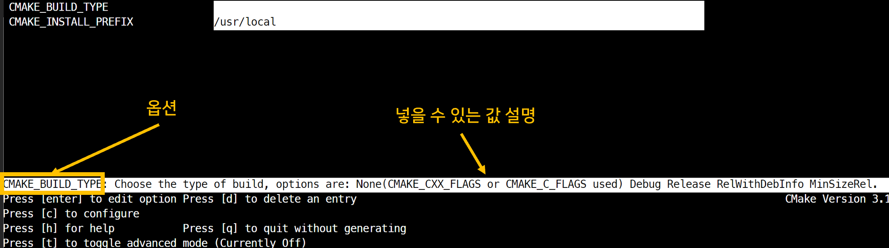
각 옵션에 대한 설명과 들어가는 옵션 값들을 잘 설명해주고 교체할 수 있다.